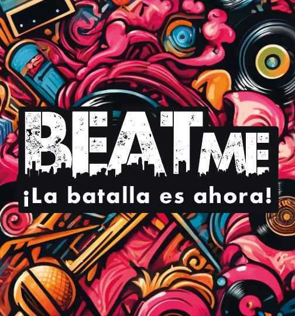
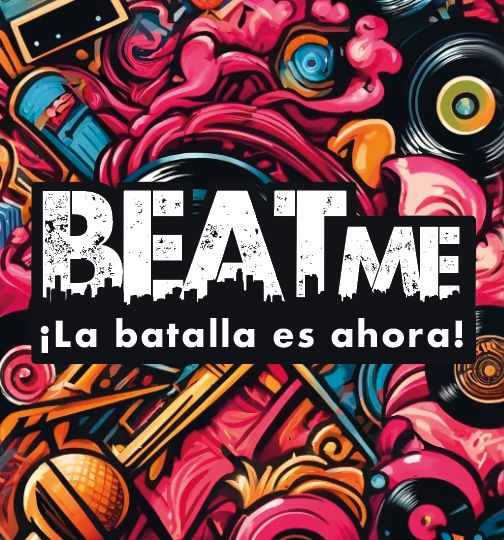

🎤🃏 ¡Bienvenidos a BeatMe, el juego de cartas que lleva el freestyle y las batallas de rap a otro nivel! 🎤🃏
BeatMe es un innovador juego de cartas diseñado para todos los amantes del freestyle y las batallas de rap.
Con 72 cartas únicas y 9 beats exclusivos, te desafiamos a improvisar, rimar y demostrar tus habilidades de rap en un entorno divertido y competitivo.
🌐 Visítanos en www.beatme.com.ar 📲 Síguenos en Instagram, TikTok y YouTube: @321beatme ¡Vamos a rimar y disfrutar juntos con BeatMe! 🎶✨ #321beatme #freestyle #rap #cardgame

 
